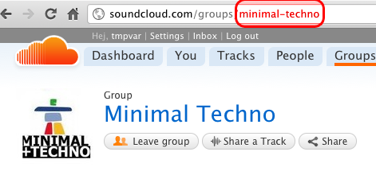
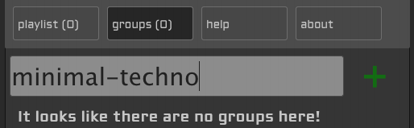

To get started, type a SoundCloud group in the box and press enter or click the plus!
Examples include: dubstep, dnb, rock, metal, etc...
Head over to SoundCloud groups and navigate to a group that interests you.

Now enter the last part of the url (highlighted in red in the image).

Using this player is simple just add some groups and you'll be off!
Click here and everything will be reset.
So, I was sick of how SoundCloud plays through groups and thought about how it could be fixed.
Currently, SoundCloud plays tracks in reverse chronological order. This is problematic because you will end up hearing the same tracks over and over if you let it stream on. This player solves that problem by playing tracks in chronological order.
When you add a group, the latest tracks will be immediately added to your playlist. After each track is played, soundcloud is queried and a new set of tracks are retrieved. As long as people are uploading tracks you will continue to hear new music!
To add to the fun, your exact state is stored in localStorage. If you refresh or accidentally close the tab, your next visit will land you in the exact state you were in before you navigated away from the page!
Developed by @tmpvar
Designed by @exploderh2
As always, this project is open source! Fork me on github